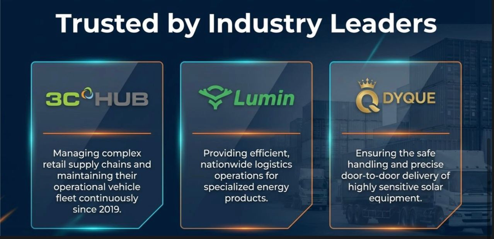

Who We Are
We are a leading provider of logistics and automotive solutions, committed to delivering exceptional service and reliability.
At Nestified Global Logistics, we are a fast-growing provider specializing in reliable, efficient, and customer-focused solutions. With years of experience, we have built a premier reputation for handling goods with care and ensuring timely delivery across Nigeria.
- Logistics
- Automobile Sales
- Vehicle Maintenance
- Warehousing and Distribution
Our Mission
To provide dependable logistics and automotive solutions that prioritize safety, speed, and customer satisfaction.
Our Vision
To be the most trusted and reliable logistics and vehicle maintenance company in Nigeria known for professionalism, delivering value and excellence to our customers.
Our Services
We offer a wide range of logistics and automotive services to meet all your transportation needs.
-
Core Logistics Services
-
Clearing and Forwarding
Efficient customs clearance and cargo forwarding services across Nigeria.
-
cargo handling
Professional management of goods to ensure safe and efficient transportation.
-
Domestic & Door-To-Door
Reliable delivery services within Nigeria.
-
E-commerce Solutions
Specialized solutions for online retailers.
-
Automotive Services
-
Automobile Sales
Buying and selling of quality used and foreign vehicles.
-
Vehicle Maintenance
Comprehensive maintenance and repair services for all types of vehicles for efficient operation.
Why Choose Us
- Reliability: We are committed to delivering your goods on time, every time.
- Customer Focus: Our team is dedicated to providing exceptional service and support.
- Experience: With years of industry experience, we have the expertise to handle all your logistics and automotive needs.
- Comprehensive Services: We offer a wide range of services to meet all your transportation and vehicle maintenance needs.
- Competitive Pricing: We provide cost-effective solutions without compromising on quality.
- Global Network: We have a extensive network of partners and agents across Nigeria to ensure seamless service delivery.
- 24/7 Support: Our dedicated team is available around the clock to assist you with any inquiries or issues.
- Speed: We understand the importance of timely delivery and strive to provide fast and efficient services.
Our Strategic Partners

Contact Us
Have questions or need assistance? Reach out to us!
Email: nestifiedg@gmail.com
Phone: +234 0 886 080608
Address: 2B Odofin CL, ikotun,Lagos, Nigeria